Equipamento, raridade e economia
Itens e armamentos
Armaduras com variante por classe, armas que brilham pelo refino e fichas de status no estilo Priston.
Itens no estilo Priston: "Caiu perfeita!"
Pedido do criador (17/11): status em faixa "x~y" rolados no drop, com Perfeito, semi-perfeito e ruim mesmo em item raro; spec de classe; conjunto só com armadura, bota, bracelete e luva. Regra escrita e fechada no GDD; ainda não entrou na simulação do jogo.
1. Faixa de sorte
Todo equipamento cai numa faixa que vale para todos os números do item. A raridade manda no patamar; a sorte manda dentro dele.
Perfeito = cada status no topo da faixa. Não há como rolar a faixa de novo no MVP: o Perfeito guarda valor no mercado.
2. Spec de classe
O item pode cair com o spec de uma das classes que o usam. Só essa classe ganha as linhas extras (linha 1: +5% do status principal); para as outras é um item normal, sem punição.
Chance de vir com spec por camada de raridade: 30%, 40%, 50%, 60% e 100%. Anéis, brinco e amuleto não têm spec.
3. Conjunto por série
Traje (Armadura ou Roupão), luvas, botas e bracelete da mesma série formam conjunto, desde o primeiro item.
- 2 peças: Vida máxima %
- 3 peças: Defesa %
- 4 peças: bônus especial da série
- 4 peças com spec da sua classe: especial ×1,25
Spec, Perfeito e conjunto não mudam o visual: no boneco aparecem traje, arma e escudo, e o refino brilha na arma.
Experimente: role um drop
Nenhum drop ainda.
Fonte: design/gdd/itens-status-spec-set.md, docs/DECISIONS.md
Trajes até o nível 60: chaves e intermediárias
Tabela aprovada pelo criador (18/11): 6 trajes-chave (desenho novo por série e por classe) e 8 intermediárias em níveis quebrados, que variam a chave anterior em pouca coisa (uma ombreira, um detalhe, uma cor), feitas por nós no Blender. Duas famílias: Armadura (6 classes) e Roupão (Mago e Oráculo).
Um traje, um design inteiro por classe
O mesmo traje dropado aparece com o design da classe de quem veste. Toda classe tem versão masculina e feminina e 3 cabeças por gênero (rosto e cabelo); o traje é o mesmo nos dois, só ajustado ao corpo. Ver a árvore de cada classe.

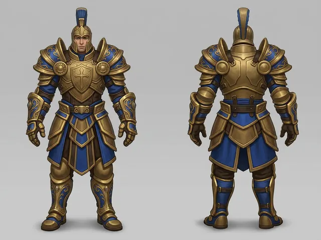

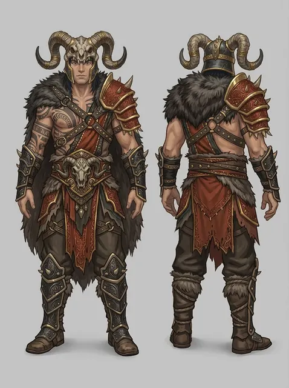

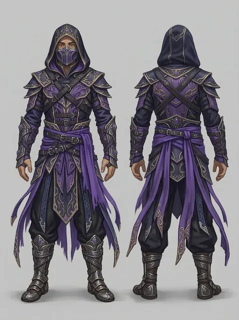

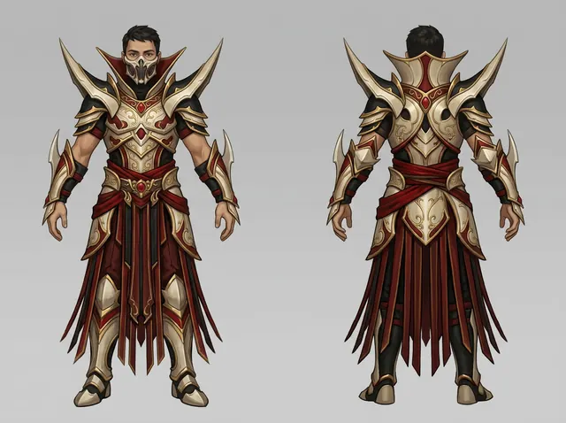

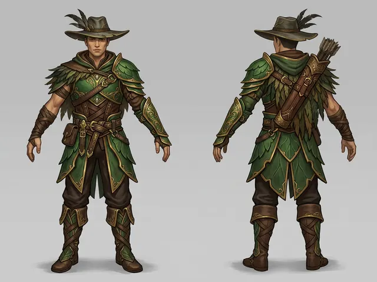

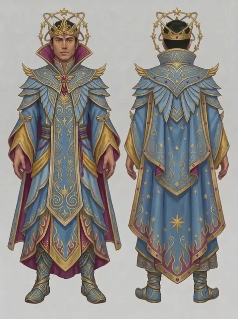

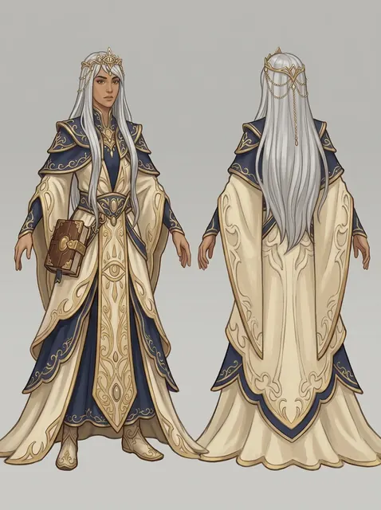

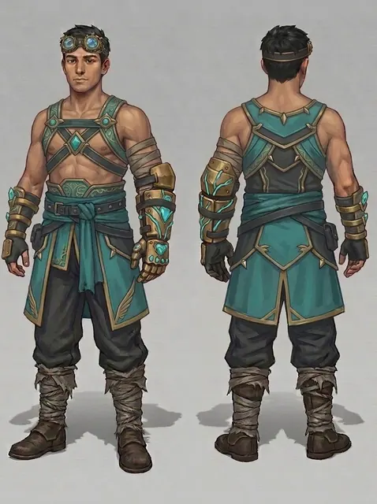

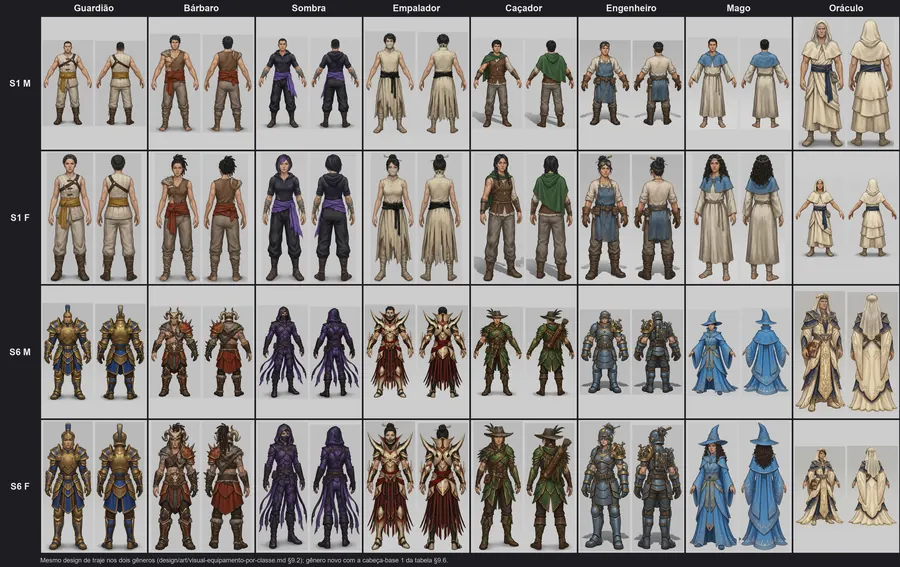

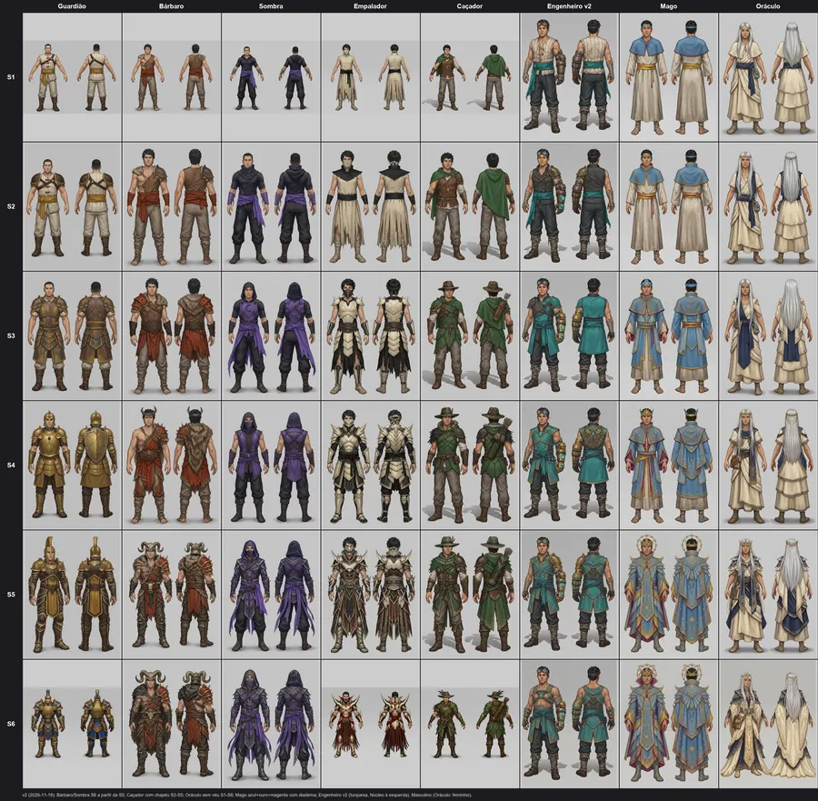
Fonte: design/gdd/equipment-catalog.md, design/art/visual-equipamento-por-classe.md
Folhas de item (conceito)
Cinco itens por folha, do tier mais baixo ao mais alto. Arte de conceito: os ícones e modelos finais saem daqui.

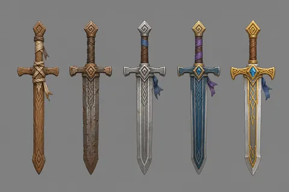

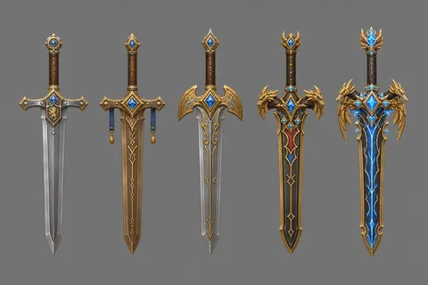

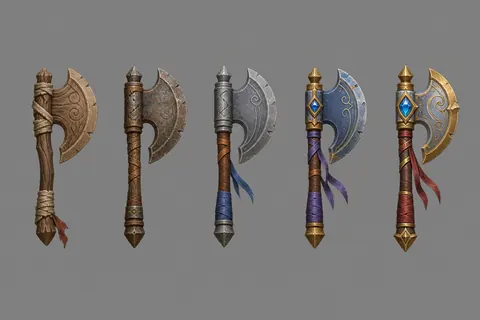

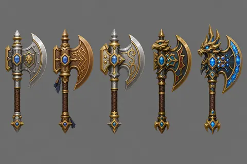

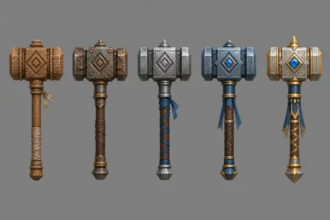

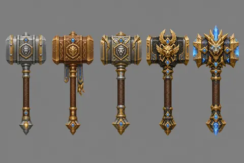

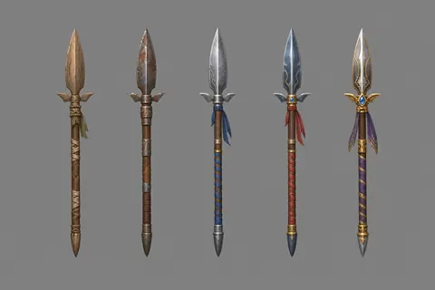

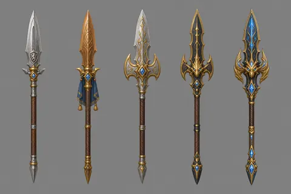

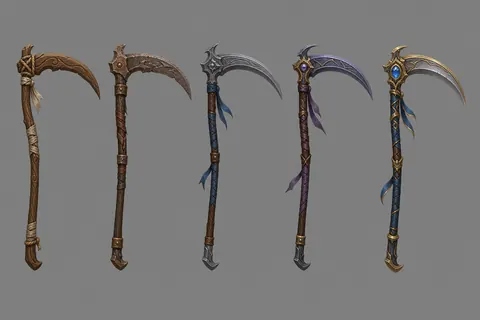

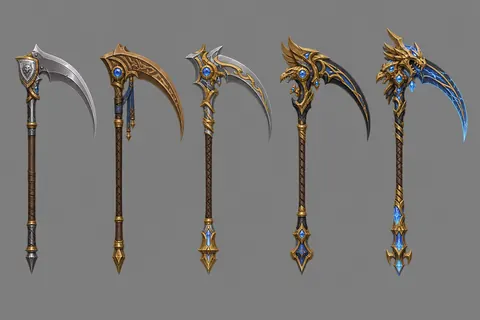

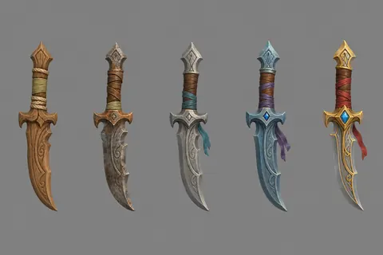

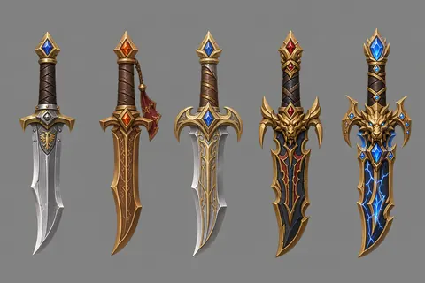

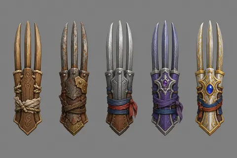

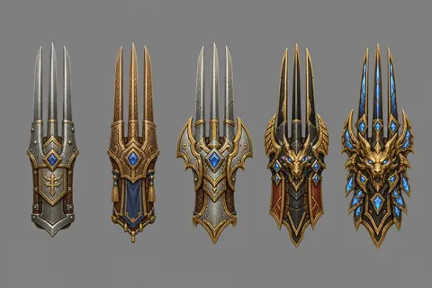

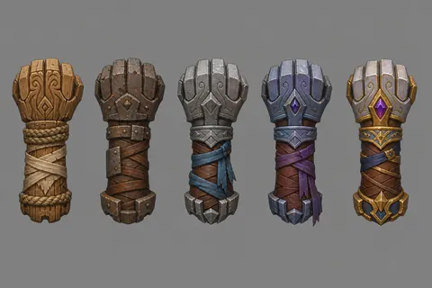

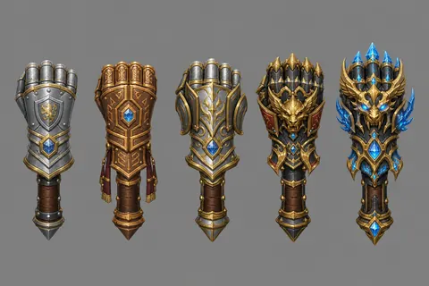

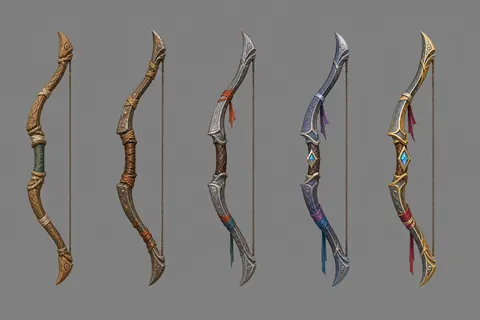

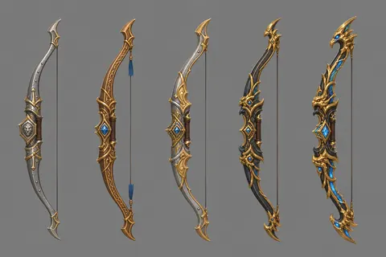

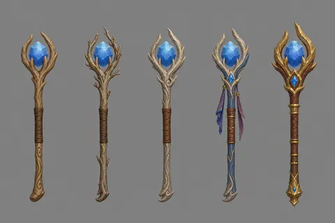

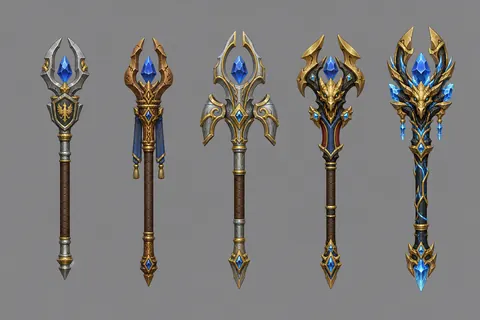

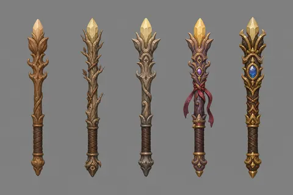

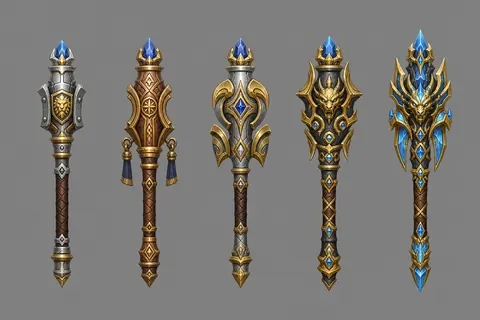

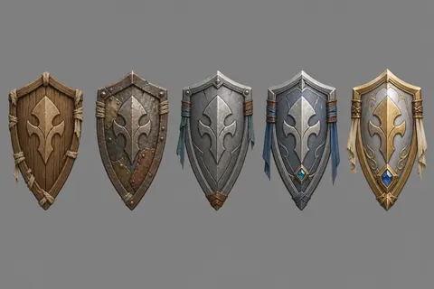

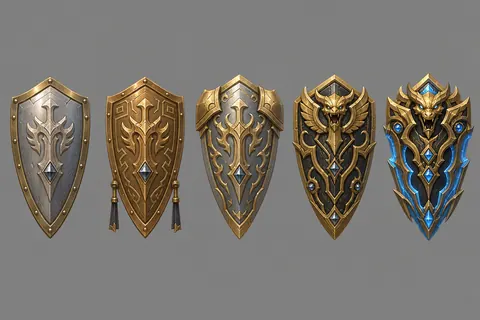

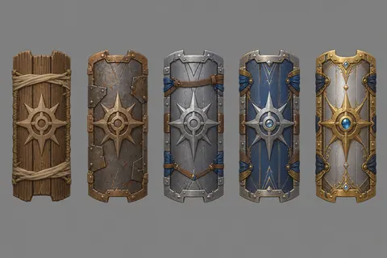

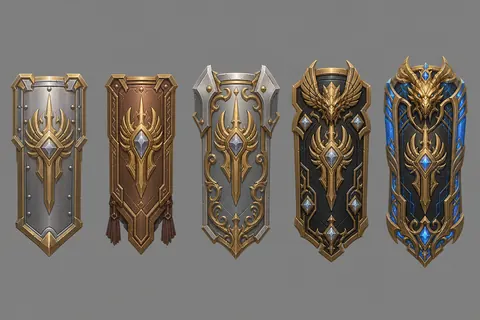

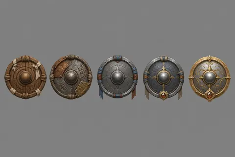

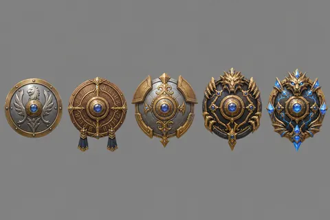

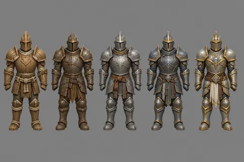

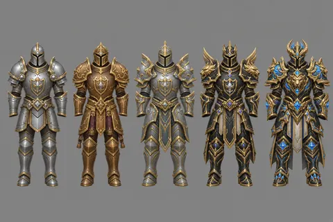

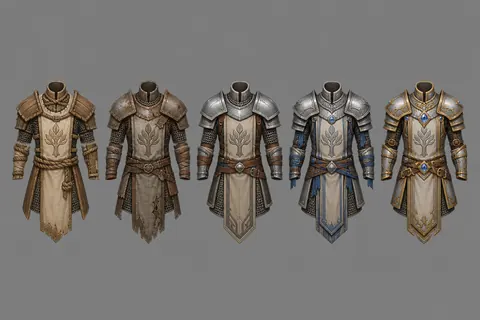

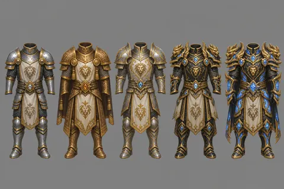

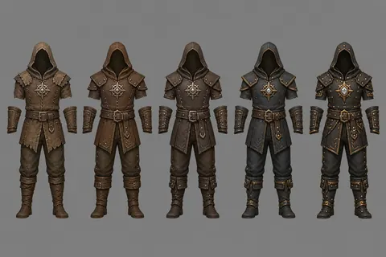

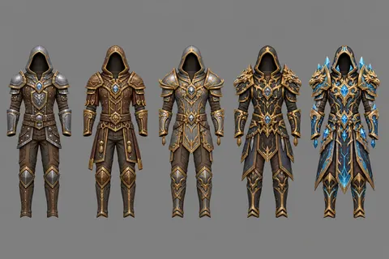

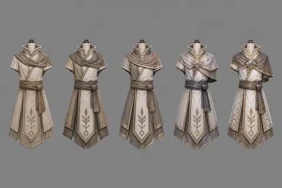

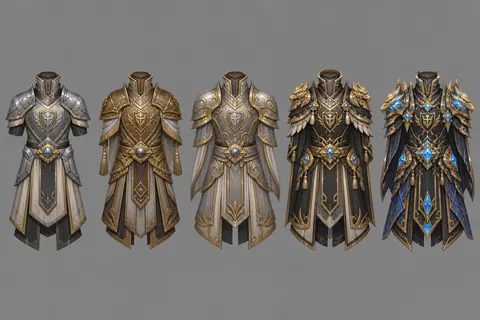

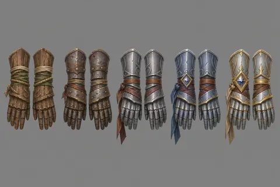

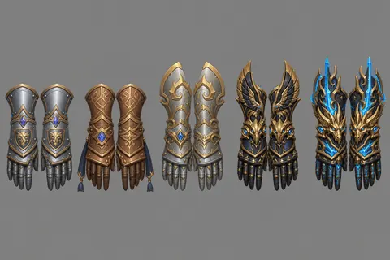

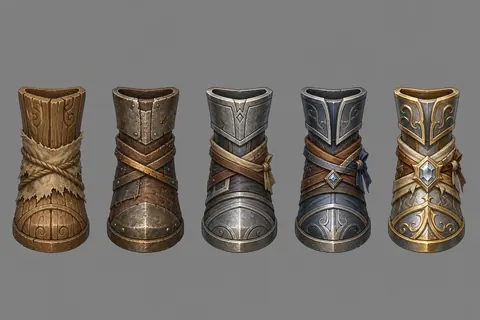

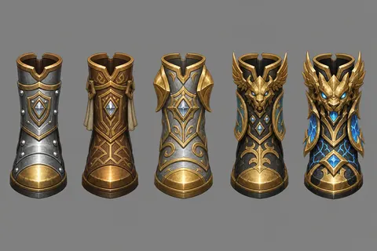


O modelo: o visual vem do equipamento
Armadura de corpo (uma variante por classe), arma e mão secundária mudam o visual; elmo, botas, luvas, anéis e brincos são só ícone e atributo. Brilham só os armamentos, pelo refino.
| Slot | Muda o visual? | Pode brilhar? | Observação |
|---|---|---|---|
suit (armadura de corpo) | Sim: malha inteira, variante por classe | Não (nunca emite) | inclui a aparência de mãos, pés e, se a variante tiver, da peça de cabeça |
weapon (todas as famílias: espada, machado, martelo, lança, foice, adaga, garra, punho/manopla, arco, cajado, varinha) | Sim: um modelo por item, igual em qualquer classe | Sim, pelo refino (faixas +5 a +15, items.md F-14) | encaixe pela weapon-grip-spec.md |
offhand (broquel, escudo, pavês, orbe, livro/tomo) | Sim: um modelo por item | Sim, pelo refino | pedido do criador |
head (elmo) [LANÇ] | Não (proposta, a confirmar) | não | só estatística. O Priston não tinha elmo visual; a peça de cabeça vem dentro da variante da armadura. Corta 1 eixo inteiro da matriz de arte |
boots (botas) | Não (proposta, a confirmar) | não | já decidido em 2026-11-11; os pés visíveis são parte da armadura |
gloves, bracer, ring ×2, amulet, earring | Não (ordem do criador) | não | só ícone e atributo |
Regras:
- Só armamento brilha: brilho (emissão, partículas de refino) existe apenas em
weaponeoffhand. Armadura, cabeça, rosto, cabelo e evolução de classe nunca emitem nem soam. Exceções de cenário continuam as de DECISIONS (Torre de Cristal, cristais espalhados). - Cabeça do personagem: rosto e cabelo escolhidos na criação (3 rostos por classe). Não mudam com nível nem com evolução.
- Peça de cabeça da armadura: cada variante pode trazer capuz, elmo aberto, elmo fechado ou máscara, desenhados para a classe. Opção "esconder peça de cabeça" por personagem, desligada de fábrica, replicada para todos verem igual (proposta, a confirmar). A máscara do Empalador é identidade de classe e não some com a opção (a opção esconde só o elmo acima dela).
- Bônus de conjunto e raridade seguem sem modelo novo: raridade é paleta no mesmo modelo (
items.md3.5); conjunto é só estatística.
Fonte: design/gdd/visual-progression-equipment.md
Raridade, qualidade e requisitos
Cinco camadas de equipamento (carta é item à parte). Cada drop rola uma qualidade por estatística dentro da faixa do tipo.
As 6 camadas de drop-feedback.md 3 valem para o jogo todo; o equipamento usa as 5 primeiras. A camada 5 (carta) é item próprio (elements.md 3.12) e nunca é equipamento.
| Camada | Nome | RARITY_STAT_MULT | Piso de qualidade Q_FLOOR | Afixos (items.md F-03) | Origem |
|---|---|---|---|---|---|
| 0 | Comum | 1,00 | 0,00 | 0 | drop genérico |
| 1 | Incomum | 1,10 | 0,15 | 1 | drop genérico |
| 2 | Raro | 1,25 | 0,30 | 2 a 3 | drop genérico |
| 3 | Épico (= o "marcante" de equipment-catalog.md 3.7) | 1,35 [AJUSTAR] | 0,45 | 2 a 3 + 1 assinatura | ~1,5% por espécie; 10% em chefe |
| 4 | Raríssimo (= "ultra raro") | 1,45 | 0,60 | 2 + assinaturas | 0,1% fixo |
- Isso fecha a "camada Épico em aberto" de
items.md3.5 e do epic de itens. O marcante deixa de ser "raro fixo ×1,25" e vira a camada 3 (×1,35). Conflito registrado na seção 6. - Comum, incomum e raro são variações do mesmo
ItemDef(sem mudança). Épico e raríssimo têmItemDefpróprio (nome, assinatura, slots fixos), como já decidido para o ultra raro.
- Atributos: os 5 de
classes.md(Força FOR, Agilidade AGI, Vitalidade VIT, Inteligência INT, Destreza DES). Nenhum atributo novo. - [PERGUNTA] "Talento": no Priston, o Talento é o atributo de técnica (pesa na Taxa de Ataque e aparece como requisito de quase tudo). No Ragna Tale esse papel já é da Destreza (precisão e crítico leve,
classes.md). Proposta: renomear Destreza para Talento (os nomes dos atributos ainda são provisórios). Até o criador responder, o documento usa DES. - Todo equipamento exige nível =
req_level(T)(items.mdF-01, sem mudança) e até dois atributos: o principal e o secundário do perfil (3.2), por F-E09. Requisito 0 não aparece na ficha. - Especialidade de classe: a classe "dona" do tipo (tabela 3.6) paga só 80% dos requisitos de atributo (
class_req_mod = 0,8, já previsto emitems.mdF-01). A ficha mostra o valor base e, para a classe dona, o valor reduzido com a marca "especialidade". [LANÇ] um item pode declararspec_classcom uma linha de bônus extra só para essa classe (ex.: "+5% de velocidade para o Caçador"). - Requisito descumprido depois de equipado (redistribuição): o item fica inativo (
items.md3.4.5): zero estatísticas, zero cartas, zero peças de conjunto. - Raridade, refino e qualidade não mudam requisitos.
- Permissão de tipo continua por classe (
ClassDef.allowed_weapon_families,allowed_offhand_types,allowed_armor_weights;CLASS_NOT_ALLOWED).
Fonte: design/gdd/equipment-stats.md
Fichas por tipo e tier
Faixas, qualidade e requisitos de cada tipo de item (dados do Codex, gerados do GDD vigente).
Faixas de cada tipo de item por tier (comum +0), a escala de qualidade e os requisitos de atributo em ajuste.
Curva de dano por nível (1 a 150)
| Nível | Tier | Arma | Dano da arma (mín.~máx.) | Média da arma (F-B02 `W`) | Ataque de referência (F-B02) | Parte da arma | Golpe (mín.~máx.) |
|---|---|---|---|---|---|---|---|
| 1 | 1 | comum +0 | 6~10 | 8 | 22 | 36% | 20~24 |
| 10 | 2 | comum +3 | 17~24 | 20 | 79 | 25% | 76~83 |
| 20 | 4 | incomum +5 | 46~63 | 54 | 171 | 32% | 163~181 |
| 40 | 8 | incomum +5 | 101~139 | 120 | 355 | 34% | 335~376 |
| 60 | 12 | incomum +5 | 161~222 | 192 | 551 | 35% | 517~584 |
| 80 | 16 | incomum +5 | 224~309 | 267 | 759 | 35% | 711~806 |
| 100 | 20 | incomum +5 | 290~400 | 345 | 1.030 | 33% | 967~1.094 |
| 130 | 26 | incomum +5 | 391~541 | 466 | 1.448 | 32% | 1.359~1.536 |
| 150 | 30 | incomum +5 | 462~638 | 550 | 1.741 | 32% | 1.636~1.847 |
Tabela por tier (comum +0, sem refino)
| T | Nível | Espada centro | Dano mín. | Dano máx. | Incomum | Raro | Épico | Raríssimo | Montante | Adaga | Cajado (matk) | Armadura média def. | Absorção | Taxa de Ataque | FOR |
|---|---|---|---|---|---|---|---|---|---|---|---|---|---|---|---|
| 1 | 1 | 8 | 6~7 | 9~10 | 9 | 10 | 11 | 12 | 12 | 5 | 11 | 6 | 0,2 | 13 | 2 |
| 2 | 6 | 18 | 13~15 | 20~23 | 20 | 22 | 24 | 26 | 26 | 12 | 25 | 13 | 0,5 | 29 | 9 |
| 3 | 11 | 28 | 21~24 | 32~36 | 31 | 35 | 38 | 41 | 41 | 19 | 40 | 21 | 0,7 | 47 | 17 |
| 4 | 16 | 39 | 30~33 | 44~50 | 43 | 49 | 53 | 57 | 57 | 26 | 55 | 30 | 1,0 | 65 | 24 |
| 5 | 21 | 51 | 38~43 | 57~65 | 56 | 64 | 69 | 74 | 73 | 34 | 71 | 38 | 1,3 | 84 | 32 |
| 6 | 26 | 63 | 47~53 | 71~80 | 69 | 79 | 85 | 91 | 90 | 41 | 88 | 47 | 1,6 | 104 | 39 |
| 7 | 31 | 75 | 56~64 | 85~95 | 82 | 94 | 101 | 109 | 108 | 49 | 105 | 56 | 1,9 | 124 | 47 |
| 8 | 36 | 87 | 66~74 | 99~111 | 96 | 109 | 118 | 127 | 126 | 58 | 122 | 66 | 2,3 | 144 | 54 |
| 9 | 41 | 100 | 75~85 | 113~127 | 110 | 125 | 135 | 145 | 144 | 66 | 140 | 75 | 2,6 | 165 | 62 |
| 10 | 46 | 113 | 85~96 | 127~144 | 124 | 141 | 153 | 164 | 163 | 75 | 158 | 85 | 2,9 | 186 | 69 |
| 11 | 51 | 126 | 95~107 | 142~160 | 139 | 158 | 170 | 183 | 182 | 83 | 177 | 95 | 3,3 | 208 | 77 |
| 12 | 56 | 139 | 105~118 | 157~177 | 153 | 174 | 188 | 202 | 201 | 92 | 195 | 105 | 3,6 | 230 | 84 |
| 13 | 61 | 153 | 115~130 | 172~194 | 168 | 191 | 206 | 222 | 220 | 101 | 214 | 115 | 4,0 | 252 | 92 |
| 14 | 66 | 166 | 125~141 | 188~212 | 183 | 208 | 225 | 241 | 240 | 110 | 233 | 125 | 4,3 | 275 | 99 |
| 15 | 71 | 180 | 135~153 | 203~229 | 198 | 225 | 243 | 261 | 259 | 119 | 252 | 135 | 4,7 | 297 | 107 |
| 16 | 76 | 194 | 146~165 | 219~247 | 213 | 243 | 262 | 281 | 279 | 128 | 272 | 146 | 5,0 | 320 | 114 |
| 17 | 81 | 208 | 156~176 | 235~265 | 229 | 260 | 281 | 302 | 300 | 137 | 291 | 156 | 5,4 | 343 | 122 |
| 18 | 86 | 222 | 167~188 | 251~283 | 244 | 278 | 300 | 322 | 320 | 147 | 311 | 167 | 5,8 | 367 | 129 |
| 19 | 91 | 236 | 178~200 | 267~301 | 260 | 296 | 319 | 343 | 340 | 156 | 331 | 177 | 6,1 | 390 | 137 |
| 20 | 96 | 251 | 189~213 | 283~319 | 276 | 313 | 339 | 364 | 361 | 166 | 351 | 188 | 6,5 | 414 | 144 |
| 21 | 101 | 265 | 199~225 | 299~337 | 292 | 332 | 358 | 385 | 382 | 175 | 371 | 199 | 6,9 | 438 | 152 |
| 22 | 106 | 280 | 210~237 | 316~356 | 308 | 350 | 378 | 406 | 403 | 185 | 392 | 210 | 7,3 | 462 | 159 |
| 23 | 111 | 294 | 221~250 | 332~375 | 324 | 368 | 398 | 427 | 424 | 194 | 412 | 221 | 7,7 | 486 | 167 |
| 24 | 116 | 309 | 233~262 | 349~393 | 340 | 387 | 418 | 448 | 445 | 204 | 433 | 232 | 8,0 | 510 | 174 |
| 25 | 121 | 324 | 244~275 | 366~412 | 357 | 405 | 438 | 470 | 467 | 214 | 454 | 243 | 8,4 | 535 | 182 |
| 26 | 126 | 339 | 255~288 | 382~431 | 373 | 424 | 458 | 492 | 488 | 224 | 475 | 254 | 8,8 | 559 | 189 |
| 27 | 131 | 354 | 266~300 | 399~450 | 390 | 443 | 478 | 513 | 510 | 234 | 496 | 266 | 9,2 | 584 | 197 |
| 28 | 136 | 369 | 278~313 | 417~470 | 406 | 462 | 498 | 535 | 532 | 244 | 517 | 277 | 9,6 | 609 | 204 |
| 29 | 141 | 384 | 289~326 | 434~489 | 423 | 481 | 519 | 557 | 554 | 254 | 538 | 288 | 10,0 | 634 | 212 |
| 30 | 146 | 400 | 301~339 | 451~508 | 440 | 500 | 540 | 580 | 576 | 264 | 560 | 300 | 10,4 | 660 | 219 |
Faixas e requisitos por tipo em ajuste
Armas · Espada 1h
| Tier | Nome | Nível | Dano mínimo | Dano máximo | Vel. | Impacto | Crítico | Taxa de Ataque | Alcance | Requisito | Requisito da classe dona |
|---|---|---|---|---|---|---|---|---|---|---|---|
| 1 | Espada de Treino | 1 | 6~7 | 9~10 | 7 | 100% | +2% | 12~14 | 1,3 m | FOR 2 · AGI 1 | FOR 1 · AGI 1 |
| 2 | Lâmina Ferrugem-Velha | 6 | 13~15 | 20~23 | 7 | 100% | +2% | 28~31 | 1,3 m | FOR 9 · AGI 5 | FOR 7 · AGI 4 |
| 3 | Espada de Recruta | 11 | 21~24 | 32~36 | 7 | 100% | +2% | 44~49 | 1,3 m | FOR 17 · AGI 8 | FOR 13 · AGI 7 |
| 4 | Gládio Tingido | 16 | 30~33 | 44~50 | 7 | 100% | +2% | 61~69 | 1,3 m | FOR 24 · AGI 12 | FOR 19 · AGI 10 |
| 5 | Espada do Vau | 21 | 38~43 | 57~65 | 7 | 100% | +2% | 79~89 | 1,3 m | FOR 32 · AGI 16 | FOR 25 · AGI 13 |
| 6 | Lâmina de Guarnição | 26 | 47~53 | 71~80 | 7 | 100% | +2% | 97~110 | 1,3 m | FOR 39 · AGI 20 | FOR 31 · AGI 16 |
| 7 | Espada Rúnica | 31 | 56~64 | 85~95 | 7 | 100% | +2% | 116~131 | 1,3 m | FOR 47 · AGI 23 | FOR 37 · AGI 19 |
| 8 | Fio de Prata Fosca | 36 | 66~74 | 99~111 | 7 | 100% | +2% | 136~153 | 1,3 m | FOR 54 · AGI 27 | FOR 43 · AGI 22 |
| 9 | Lâmina Ferro-Negro | 41 | 75~85 | 113~127 | 7 | 100% | +2% | 155~175 | 1,3 m | FOR 62 · AGI 31 | FOR 49 · AGI 25 |
| 10 | Gume do Veio Azul | 46 | 85~96 | 127~144 | 7 | 100% | +2% | 175~198 | 1,3 m | FOR 69 · AGI 35 | FOR 55 · AGI 28 |
Armas · Montante (espada 2h)
| Tier | Nome | Nível | Dano mínimo | Dano máximo | Vel. | Impacto | Crítico | Taxa de Ataque | Alcance | Requisito | Requisito da classe dona |
|---|---|---|---|---|---|---|---|---|---|---|---|
| 1 | Montante de Madeira | 1 | 8~9 | 14~15 | 6 | 144% | +2% | 11~13 | 1,6 m | FOR 2 · AGI 1 | FOR 1 · AGI 1 |
| 2 | Montante de Ferro Enferrujado | 6 | 18~20 | 30~34 | 6 | 144% | +2% | 25~28 | 1,6 m | FOR 9 · AGI 5 | FOR 7 · AGI 4 |
| 3 | Montante de Ferro | 11 | 29~32 | 48~54 | 6 | 144% | +2% | 40~45 | 1,6 m | FOR 17 · AGI 8 | FOR 13 · AGI 7 |
| 4 | Montante de Aço Tingido | 16 | 40~45 | 67~75 | 6 | 144% | +2% | 56~63 | 1,6 m | FOR 24 · AGI 12 | FOR 19 · AGI 10 |
| 5 | Montante de Aço Temperado | 21 | 52~58 | 86~97 | 6 | 144% | +2% | 72~81 | 1,6 m | FOR 32 · AGI 16 | FOR 25 · AGI 13 |
| 6 | Montante de Guarnição | 26 | 64~72 | 106~120 | 6 | 144% | +2% | 89~100 | 1,6 m | FOR 39 · AGI 20 | FOR 31 · AGI 16 |
| 7 | Montante de Bronze Rúnico | 31 | 76~86 | 127~143 | 6 | 144% | +2% | 106~119 | 1,6 m | FOR 47 · AGI 23 | FOR 37 · AGI 19 |
| 8 | Montante de Prata Fosca | 36 | 89~100 | 148~167 | 6 | 144% | +2% | 123~139 | 1,6 m | FOR 54 · AGI 27 | FOR 43 · AGI 22 |
| 9 | Montante de Ferro-Negro | 41 | 102~115 | 169~191 | 6 | 144% | +2% | 141~159 | 1,6 m | FOR 62 · AGI 31 | FOR 49 · AGI 25 |
| 10 | Montante do Veio Azul | 46 | 115~129 | 191~216 | 6 | 144% | +2% | 159~180 | 1,6 m | FOR 69 · AGI 35 | FOR 55 · AGI 28 |
Armas · Machado 1h
| Tier | Nome | Nível | Dano mínimo | Dano máximo | Vel. | Impacto | Crítico | Taxa de Ataque | Alcance | Requisito | Requisito da classe dona |
|---|---|---|---|---|---|---|---|---|---|---|---|
| 1 | Machadinha de Madeira | 1 | 6~7 | 12~13 | 6 | 118% | — | 10~11 | 1,3 m | FOR 2 · VIT 1 | FOR 1 · VIT 1 |
| 2 | Machadinha de Ferro Enferrujado | 6 | 14~16 | 26~29 | 6 | 118% | — | 21~24 | 1,3 m | FOR 9 · VIT 5 | FOR 7 · VIT 4 |
| 3 | Machadinha de Ferro | 11 | 22~25 | 41~46 | 6 | 118% | — | 34~38 | 1,3 m | FOR 17 · VIT 8 | FOR 13 · VIT 7 |
| 4 | Machadinha de Aço Tingido | 16 | 31~34 | 57~64 | 6 | 118% | — | 47~53 | 1,3 m | FOR 24 · VIT 12 | FOR 19 · VIT 10 |
| 5 | Machadinha de Aço Temperado | 21 | 40~45 | 73~83 | 6 | 118% | — | 61~69 | 1,3 m | FOR 32 · VIT 16 | FOR 25 · VIT 13 |
| 6 | Machado de Guarnição | 26 | 49~55 | 91~102 | 6 | 118% | — | 75~85 | 1,3 m | FOR 39 · VIT 20 | FOR 31 · VIT 16 |
| 7 | Machado de Bronze Rúnico | 31 | 58~66 | 108~122 | 6 | 118% | — | 90~101 | 1,3 m | FOR 47 · VIT 23 | FOR 37 · VIT 19 |
| 8 | Machado de Prata Fosca | 36 | 68~77 | 126~142 | 6 | 118% | — | 105~118 | 1,3 m | FOR 54 · VIT 27 | FOR 43 · VIT 22 |
| 9 | Machado de Ferro-Negro | 41 | 78~88 | 144~163 | 6 | 118% | — | 120~135 | 1,3 m | FOR 62 · VIT 31 | FOR 49 · VIT 25 |
| 10 | Machado do Veio Azul | 46 | 88~99 | 163~184 | 6 | 118% | — | 135~153 | 1,3 m | FOR 69 · VIT 35 | FOR 55 · VIT 28 |
Armas · Machado Duplo 2h
| Tier | Nome | Nível | Dano mínimo | Dano máximo | Vel. | Impacto | Crítico | Taxa de Ataque | Alcance | Requisito | Requisito da classe dona |
|---|---|---|---|---|---|---|---|---|---|---|---|
| 1 | Machado Duplo de Madeira | 1 | 8~9 | 17~19 | 5 | 166% | — | 9~10 | 1,5 m | FOR 2 · VIT 1 | FOR 1 · VIT 1 |
| 2 | Machado Duplo de Ferro Enferrujado | 6 | 18~20 | 37~42 | 5 | 166% | — | 20~23 | 1,5 m | FOR 9 · VIT 5 | FOR 7 · VIT 4 |
| 3 | Machado Duplo de Ferro | 11 | 29~32 | 60~67 | 5 | 166% | — | 32~36 | 1,5 m | FOR 17 · VIT 8 | FOR 13 · VIT 7 |
| 4 | Machado Duplo de Aço Tingido | 16 | 40~45 | 83~94 | 5 | 166% | — | 44~50 | 1,5 m | FOR 24 · VIT 12 | FOR 19 · VIT 10 |
| 5 | Machado Duplo de Aço Temperado | 21 | 52~58 | 107~121 | 5 | 166% | — | 57~65 | 1,5 m | FOR 32 · VIT 16 | FOR 25 · VIT 13 |
| 6 | Machado Duplo de Guarnição | 26 | 64~72 | 132~149 | 5 | 166% | — | 71~80 | 1,5 m | FOR 39 · VIT 20 | FOR 31 · VIT 16 |
| 7 | Machado Duplo de Bronze Rúnico | 31 | 76~86 | 158~178 | 5 | 166% | — | 85~95 | 1,5 m | FOR 47 · VIT 23 | FOR 37 · VIT 19 |
| 8 | Machado Duplo de Prata Fosca | 36 | 89~100 | 184~208 | 5 | 166% | — | 99~111 | 1,5 m | FOR 54 · VIT 27 | FOR 43 · VIT 22 |
| 9 | Machado Duplo de Ferro-Negro | 41 | 102~114 | 211~238 | 5 | 166% | — | 113~127 | 1,5 m | FOR 62 · VIT 31 | FOR 49 · VIT 25 |
| 10 | Machado Duplo do Veio Azul | 46 | 115~129 | 238~268 | 5 | 166% | — | 127~144 | 1,5 m | FOR 69 · VIT 35 | FOR 55 · VIT 28 |
Armas · Martelo 1h
| Tier | Nome | Nível | Dano mínimo | Dano máximo | Vel. | Impacto | Crítico | Taxa de Ataque | Alcance | Requisito | Requisito da classe dona |
|---|---|---|---|---|---|---|---|---|---|---|---|
| 1 | Clava de Madeira | 1 | 7~8 | 11~13 | 6 | 120% | — | 10~11 | 1,2 m | FOR 2 · DES 1 | FOR 1 · DES 1 |
| 2 | Clava de Ferro Enferrujado | 6 | 15~17 | 25~28 | 6 | 120% | — | 21~24 | 1,2 m | FOR 9 · DES 5 | FOR 7 · DES 4 |
| 3 | Clava de Ferro | 11 | 24~27 | 40~45 | 6 | 120% | — | 34~38 | 1,2 m | FOR 17 · DES 8 | FOR 13 · DES 7 |
| 4 | Clava de Aço Tingido | 16 | 33~38 | 56~63 | 6 | 120% | — | 47~53 | 1,2 m | FOR 24 · DES 12 | FOR 19 · DES 10 |
| 5 | Clava de Aço Temperado | 21 | 43~49 | 72~81 | 6 | 120% | — | 61~69 | 1,2 m | FOR 32 · DES 16 | FOR 25 · DES 13 |
| 6 | Maça de Guarnição | 26 | 53~60 | 89~100 | 6 | 120% | — | 75~85 | 1,2 m | FOR 39 · DES 20 | FOR 31 · DES 16 |
| 7 | Maça de Bronze Rúnico | 31 | 63~72 | 106~119 | 6 | 120% | — | 90~101 | 1,2 m | FOR 47 · DES 23 | FOR 37 · DES 19 |
| 8 | Maça de Prata Fosca | 36 | 74~83 | 123~139 | 6 | 120% | — | 105~118 | 1,2 m | FOR 54 · DES 27 | FOR 43 · DES 22 |
| 9 | Maça de Ferro-Negro | 41 | 85~96 | 141~159 | 6 | 120% | — | 120~135 | 1,2 m | FOR 62 · DES 31 | FOR 49 · DES 25 |
| 10 | Maça do Veio Azul | 46 | 96~108 | 159~180 | 6 | 120% | — | 135~153 | 1,2 m | FOR 69 · DES 35 | FOR 55 · DES 28 |
Armas · Marreta 2h
| Tier | Nome | Nível | Dano mínimo | Dano máximo | Vel. | Impacto | Crítico | Taxa de Ataque | Alcance | Requisito | Requisito da classe dona |
|---|---|---|---|---|---|---|---|---|---|---|---|
| 1 | Marreta de Madeira | 1 | 9~10 | 18~20 | 5 | 175% | — | 9~10 | 1,5 m | FOR 2 · DES 1 | FOR 1 · DES 1 |
| 2 | Marreta de Ferro Enferrujado | 6 | 19~21 | 39~44 | 5 | 175% | — | 20~23 | 1,5 m | FOR 9 · DES 5 | FOR 7 · DES 4 |
| 3 | Marreta de Ferro | 11 | 30~34 | 63~71 | 5 | 175% | — | 32~36 | 1,5 m | FOR 17 · DES 8 | FOR 13 · DES 7 |
| 4 | Marreta de Aço Tingido | 16 | 42~48 | 87~99 | 5 | 175% | — | 44~50 | 1,5 m | FOR 24 · DES 12 | FOR 19 · DES 10 |
| 5 | Marreta de Aço Temperado | 21 | 54~61 | 113~128 | 5 | 175% | — | 57~65 | 1,5 m | FOR 32 · DES 16 | FOR 25 · DES 13 |
| 6 | Marreta de Guarnição | 26 | 67~76 | 139~157 | 5 | 175% | — | 71~80 | 1,5 m | FOR 39 · DES 20 | FOR 31 · DES 16 |
| 7 | Marreta de Bronze Rúnico | 31 | 80~90 | 167~188 | 5 | 175% | — | 85~95 | 1,5 m | FOR 47 · DES 23 | FOR 37 · DES 19 |
| 8 | Marreta de Prata Fosca | 36 | 93~105 | 194~219 | 5 | 175% | — | 99~111 | 1,5 m | FOR 54 · DES 27 | FOR 43 · DES 22 |
| 9 | Marreta de Ferro-Negro | 41 | 107~121 | 222~251 | 5 | 175% | — | 113~127 | 1,5 m | FOR 62 · DES 31 | FOR 49 · DES 25 |
| 10 | Marreta do Veio Azul | 46 | 121~136 | 251~283 | 5 | 175% | — | 127~144 | 1,5 m | FOR 69 · DES 35 | FOR 55 · DES 28 |
Armas · Lança Curta 1h
| Tier | Nome | Nível | Dano mínimo | Dano máximo | Vel. | Impacto | Crítico | Taxa de Ataque | Alcance | Requisito | Requisito da classe dona |
|---|---|---|---|---|---|---|---|---|---|---|---|
| 1 | Vara de Ponta de Madeira | 1 | 6~7 | 9~11 | 7 | 103% | — | 11~13 | 1,8 m | FOR 2 · AGI 1 | FOR 1 · AGI 1 |
| 2 | Vara de Ponta de Ferro Enferrujado | 6 | 13~15 | 21~24 | 7 | 103% | — | 25~28 | 1,8 m | FOR 9 · AGI 5 | FOR 7 · AGI 4 |
| 3 | Vara de Ponta de Ferro | 11 | 21~24 | 33~38 | 7 | 103% | — | 40~45 | 1,8 m | FOR 17 · AGI 8 | FOR 13 · AGI 7 |
| 4 | Vara de Ponta de Aço Tingido | 16 | 30~34 | 47~52 | 7 | 103% | — | 56~63 | 1,8 m | FOR 24 · AGI 12 | FOR 19 · AGI 10 |
| 5 | Vara de Ponta de Aço Temperado | 21 | 38~43 | 60~68 | 7 | 103% | — | 72~81 | 1,8 m | FOR 32 · AGI 16 | FOR 25 · AGI 13 |
| 6 | Lança Curta de Guarnição | 26 | 47~53 | 74~84 | 7 | 103% | — | 89~100 | 1,8 m | FOR 39 · AGI 20 | FOR 31 · AGI 16 |
| 7 | Lança Curta de Bronze Rúnico | 31 | 57~64 | 89~100 | 7 | 103% | — | 106~119 | 1,8 m | FOR 47 · AGI 23 | FOR 37 · AGI 19 |
| 8 | Lança Curta de Prata Fosca | 36 | 66~74 | 103~116 | 7 | 103% | — | 123~139 | 1,8 m | FOR 54 · AGI 27 | FOR 43 · AGI 22 |
| 9 | Lança Curta de Ferro-Negro | 41 | 76~85 | 118~133 | 7 | 103% | — | 141~159 | 1,8 m | FOR 62 · AGI 31 | FOR 49 · AGI 25 |
| 10 | Lança Curta do Veio Azul | 46 | 85~96 | 133~151 | 7 | 103% | — | 159~180 | 1,8 m | FOR 69 · AGI 35 | FOR 55 · AGI 28 |
Armas · Pique 2h
| Tier | Nome | Nível | Dano mínimo | Dano máximo | Vel. | Impacto | Crítico | Taxa de Ataque | Alcance | Requisito | Requisito da classe dona |
|---|---|---|---|---|---|---|---|---|---|---|---|
| 1 | Pique de Madeira | 1 | 7~8 | 12~14 | 6 | 132% | — | 11~13 | 2,2 m | FOR 2 · AGI 1 | FOR 1 · AGI 1 |
| 2 | Pique de Ferro Enferrujado | 6 | 17~19 | 28~31 | 6 | 132% | — | 25~28 | 2,2 m | FOR 9 · AGI 5 | FOR 7 · AGI 4 |
| 3 | Pique de Ferro | 11 | 26~30 | 44~49 | 6 | 132% | — | 40~45 | 2,2 m | FOR 17 · AGI 8 | FOR 13 · AGI 7 |
| 4 | Pique de Aço Tingido | 16 | 37~41 | 61~69 | 6 | 132% | — | 56~63 | 2,2 m | FOR 24 · AGI 12 | FOR 19 · AGI 10 |
| 5 | Pique de Aço Temperado | 21 | 47~53 | 79~89 | 6 | 132% | — | 72~81 | 2,2 m | FOR 32 · AGI 16 | FOR 25 · AGI 13 |
| 6 | Pique de Guarnição | 26 | 58~66 | 97~110 | 6 | 132% | — | 89~100 | 2,2 m | FOR 39 · AGI 20 | FOR 31 · AGI 16 |
| 7 | Pique de Bronze Rúnico | 31 | 70~79 | 116~131 | 6 | 132% | — | 106~119 | 2,2 m | FOR 47 · AGI 23 | FOR 37 · AGI 19 |
| 8 | Pique de Prata Fosca | 36 | 81~92 | 136~153 | 6 | 132% | — | 123~139 | 2,2 m | FOR 54 · AGI 27 | FOR 43 · AGI 22 |
| 9 | Pique de Ferro-Negro | 41 | 93~105 | 155~175 | 6 | 132% | — | 141~159 | 2,2 m | FOR 62 · AGI 31 | FOR 49 · AGI 25 |
| 10 | Pique do Veio Azul | 46 | 105~119 | 175~198 | 6 | 132% | — | 159~180 | 2,2 m | FOR 69 · AGI 35 | FOR 55 · AGI 28 |
Armas · Foice 2h
| Tier | Nome | Nível | Dano mínimo | Dano máximo | Vel. | Impacto | Crítico | Taxa de Ataque | Alcance | Requisito | Requisito da classe dona |
|---|---|---|---|---|---|---|---|---|---|---|---|
| 1 | Foicinha de Madeira | 1 | 8~9 | 14~16 | 5 | 148% | — | 10~11 | 1,8 m | AGI 2 · FOR 1 | AGI 1 · FOR 1 |
| 2 | Foicinha de Ferro Enferrujado | 6 | 18~20 | 32~36 | 5 | 148% | — | 23~25 | 1,8 m | AGI 9 · FOR 5 | AGI 7 · FOR 4 |
| 3 | Foicinha de Ferro | 11 | 28~32 | 50~57 | 5 | 148% | — | 36~40 | 1,8 m | AGI 17 · FOR 8 | AGI 13 · FOR 7 |
| 4 | Foicinha de Aço Tingido | 16 | 39~44 | 70~79 | 5 | 148% | — | 50~56 | 1,8 m | AGI 24 · FOR 12 | AGI 19 · FOR 10 |
| 5 | Foicinha de Aço Temperado | 21 | 51~58 | 91~102 | 5 | 148% | — | 65~73 | 1,8 m | AGI 32 · FOR 16 | AGI 25 · FOR 13 |
| 6 | Foice de Guarnição | 26 | 63~71 | 112~126 | 5 | 148% | — | 80~90 | 1,8 m | AGI 39 · FOR 20 | AGI 31 · FOR 16 |
| 7 | Foice de Bronze Rúnico | 31 | 75~85 | 134~151 | 5 | 148% | — | 95~107 | 1,8 m | AGI 47 · FOR 23 | AGI 37 · FOR 19 |
| 8 | Foice de Prata Fosca | 36 | 88~99 | 156~176 | 5 | 148% | — | 111~125 | 1,8 m | AGI 54 · FOR 27 | AGI 43 · FOR 22 |
| 9 | Foice de Ferro-Negro | 41 | 100~113 | 178~201 | 5 | 148% | — | 127~143 | 1,8 m | AGI 62 · FOR 31 | AGI 49 · FOR 25 |
| 10 | Foice do Veio Azul | 46 | 113~128 | 201~227 | 5 | 148% | — | 143~162 | 1,8 m | AGI 69 · FOR 35 | AGI 55 · FOR 28 |
Armas · Adaga 1h
| Tier | Nome | Nível | Dano mínimo | Dano máximo | Vel. | Impacto | Crítico | Taxa de Ataque | Alcance | Requisito | Requisito da classe dona |
|---|---|---|---|---|---|---|---|---|---|---|---|
| 1 | Faca de Madeira | 1 | 4~5 | 6 | 10 | 66% | +8% | 14~16 | 1,0 m | AGI 2 · DES 1 | AGI 1 · DES 1 |
| 2 | Faca de Ferro Enferrujado | 6 | 9~11 | 13~14 | 10 | 66% | +8% | 31~35 | 1,0 m | AGI 9 · DES 5 | AGI 7 · DES 4 |
| 3 | Faca de Ferro | 11 | 15~17 | 20~23 | 10 | 66% | +8% | 50~56 | 1,0 m | AGI 17 · DES 8 | AGI 13 · DES 7 |
| 4 | Faca de Aço Tingido | 16 | 21~23 | 28~32 | 10 | 66% | +8% | 69~78 | 1,0 m | AGI 24 · DES 12 | AGI 19 · DES 10 |
| 5 | Faca de Aço Temperado | 21 | 27~30 | 36~41 | 10 | 66% | +8% | 90~101 | 1,0 m | AGI 32 · DES 16 | AGI 25 · DES 13 |
| 6 | Adaga de Guarnição | 26 | 33~37 | 45~51 | 10 | 66% | +8% | 111~125 | 1,0 m | AGI 39 · DES 20 | AGI 31 · DES 16 |
| 7 | Adaga de Bronze Rúnico | 31 | 40~45 | 53~60 | 10 | 66% | +8% | 132~149 | 1,0 m | AGI 47 · DES 23 | AGI 37 · DES 19 |
| 8 | Adaga de Prata Fosca | 36 | 46~52 | 62~70 | 10 | 66% | +8% | 154~174 | 1,0 m | AGI 54 · DES 27 | AGI 43 · DES 22 |
| 9 | Adaga de Ferro-Negro | 41 | 53~60 | 71~81 | 10 | 66% | +8% | 176~199 | 1,0 m | AGI 62 · DES 31 | AGI 49 · DES 25 |
| 10 | Adaga do Veio Azul | 46 | 60~67 | 81~91 | 10 | 66% | +8% | 199~225 | 1,0 m | AGI 69 · DES 35 | AGI 55 · DES 28 |
Armas · Garra (par)
| Tier | Nome | Nível | Dano mínimo | Dano máximo | Vel. | Impacto | Crítico | Taxa de Ataque | Alcance | Requisito | Requisito da classe dona |
|---|---|---|---|---|---|---|---|---|---|---|---|
| 1 | Unhas de Madeira | 1 | 4~5 | 6~7 | 9 | 70% | +3% | 13~15 | 1,0 m | AGI 2 · FOR 1 | AGI 1 |
| 2 | Unhas de Ferro Enferrujado | 6 | 10~11 | 14~16 | 9 | 70% | +3% | 29~32 | 1,0 m | AGI 9 · FOR 4 | AGI 7 · FOR 3 |
| 3 | Unhas de Ferro | 11 | 15~17 | 22~25 | 9 | 70% | +3% | 46~52 | 1,0 m | AGI 17 · FOR 7 | AGI 13 · FOR 5 |
| 4 | Unhas de Aço Tingido | 16 | 21~24 | 31~34 | 9 | 70% | +3% | 64~72 | 1,0 m | AGI 24 · FOR 10 | AGI 19 · FOR 8 |
| 5 | Unhas de Aço Temperado | 21 | 27~31 | 40~45 | 9 | 70% | +3% | 83~93 | 1,0 m | AGI 32 · FOR 13 | AGI 25 · FOR 10 |
| 6 | Garras de Guarnição | 26 | 34~38 | 49~55 | 9 | 70% | +3% | 102~115 | 1,0 m | AGI 39 · FOR 16 | AGI 31 · FOR 12 |
| 7 | Garras de Bronze Rúnico | 31 | 40~46 | 58~66 | 9 | 70% | +3% | 122~137 | 1,0 m | AGI 47 · FOR 19 | AGI 37 · FOR 15 |
| 8 | Garras de Prata Fosca | 36 | 47~53 | 68~77 | 9 | 70% | +3% | 142~160 | 1,0 m | AGI 54 · FOR 22 | AGI 43 · FOR 17 |
| 9 | Garras de Ferro-Negro | 41 | 54~61 | 78~88 | 9 | 70% | +3% | 162~183 | 1,0 m | AGI 62 · FOR 25 | AGI 49 · FOR 20 |
| 10 | Garras do Veio Azul | 46 | 61~69 | 88~99 | 9 | 70% | +3% | 183~207 | 1,0 m | AGI 69 · FOR 28 | AGI 55 · FOR 22 |
Armas · Punho / manopla (par)
| Tier | Nome | Nível | Dano mínimo | Dano máximo | Vel. | Impacto | Crítico | Taxa de Ataque | Alcance | Requisito | Requisito da classe dona |
|---|---|---|---|---|---|---|---|---|---|---|---|
| 1 | Luvas de Briga de Madeira | 1 | 5~6 | 8~9 | 9 | 85% | — | 11~13 | 0,9 m | FOR 2 · VIT 1 | FOR 1 |
| 2 | Luvas de Briga de Ferro Enferrujado | 6 | 11~13 | 17~19 | 9 | 85% | — | 25~28 | 0,9 m | FOR 9 · VIT 4 | FOR 7 · VIT 3 |
| 3 | Luvas de Briga de Ferro | 11 | 18~20 | 27~31 | 9 | 85% | — | 40~45 | 0,9 m | FOR 17 · VIT 7 | FOR 13 · VIT 5 |
| 4 | Luvas de Briga de Aço Tingido | 16 | 25~28 | 38~43 | 9 | 85% | — | 56~63 | 0,9 m | FOR 24 · VIT 10 | FOR 19 · VIT 8 |
| 5 | Luvas de Briga de Aço Temperado | 21 | 33~37 | 49~55 | 9 | 85% | — | 72~81 | 0,9 m | FOR 32 · VIT 13 | FOR 25 · VIT 10 |
| 6 | Manoplas de Guarnição | 26 | 40~45 | 60~68 | 9 | 85% | — | 89~100 | 0,9 m | FOR 39 · VIT 16 | FOR 31 · VIT 12 |
| 7 | Manoplas de Bronze Rúnico | 31 | 48~54 | 72~81 | 9 | 85% | — | 106~119 | 0,9 m | FOR 47 · VIT 19 | FOR 37 · VIT 15 |
| 8 | Manoplas de Prata Fosca | 36 | 56~63 | 84~95 | 9 | 85% | — | 123~139 | 0,9 m | FOR 54 · VIT 22 | FOR 43 · VIT 17 |
| 9 | Manoplas de Ferro-Negro | 41 | 64~72 | 96~108 | 9 | 85% | — | 141~159 | 0,9 m | FOR 62 · VIT 25 | FOR 49 · VIT 20 |
| 10 | Manoplas do Veio Azul | 46 | 72~81 | 108~122 | 9 | 85% | — | 159~180 | 0,9 m | FOR 69 · VIT 28 | FOR 55 · VIT 22 |
Armas · Arco 2h
| Tier | Nome | Nível | Dano mínimo | Dano máximo | Vel. | Impacto | Crítico | Taxa de Ataque | Alcance | Requisito | Requisito da classe dona |
|---|---|---|---|---|---|---|---|---|---|---|---|
| 1 | Arco Curto de Madeira | 1 | 6~7 | 9~10 | 6 | 100% | +3% | 15~17 | 9,0 m | DES 2 · AGI 1 | DES 1 · AGI 1 |
| 2 | Arco Curto de Galho Seco | 6 | 14~15 | 20~22 | 6 | 100% | +3% | 34~38 | 9,0 m | DES 9 · AGI 5 | DES 7 · AGI 4 |
| 3 | Arco Curto de Freixo | 11 | 22~25 | 31~35 | 6 | 100% | +3% | 54~61 | 9,0 m | DES 17 · AGI 8 | DES 13 · AGI 7 |
| 4 | Arco Curto de Freixo Tingido | 16 | 30~34 | 44~49 | 6 | 100% | +3% | 75~85 | 9,0 m | DES 24 · AGI 12 | DES 19 · AGI 10 |
| 5 | Arco Curto de Teixo | 21 | 39~44 | 56~64 | 6 | 100% | +3% | 97~109 | 9,0 m | DES 32 · AGI 16 | DES 25 · AGI 13 |
| 6 | Arco de Guarnição | 26 | 48~55 | 70~79 | 6 | 100% | +3% | 120~135 | 9,0 m | DES 39 · AGI 20 | DES 31 · AGI 16 |
| 7 | Arco de Bronze Rúnico | 31 | 58~65 | 83~94 | 6 | 100% | +3% | 143~161 | 9,0 m | DES 47 · AGI 23 | DES 37 · AGI 19 |
| 8 | Arco de Prata Fosca | 36 | 67~76 | 97~109 | 6 | 100% | +3% | 166~188 | 9,0 m | DES 54 · AGI 27 | DES 43 · AGI 22 |
| 9 | Arco de Ferro-Negro | 41 | 77~87 | 111~125 | 6 | 100% | +3% | 191~215 | 9,0 m | DES 62 · AGI 31 | DES 49 · AGI 25 |
| 10 | Arco do Veio Azul | 46 | 87~98 | 125~141 | 6 | 100% | +3% | 215~243 | 9,0 m | DES 69 · AGI 35 | DES 55 · AGI 28 |
Armas · Cajado 2h
| Tier | Nome | Nível | Poder Mágico mín. | Poder Mágico máx. | Vel. | Mana adicional | Regen. de Mana | Alcance | Requisito | Requisito da classe dona |
|---|---|---|---|---|---|---|---|---|---|---|
| 1 | Bordão de Madeira | 1 | 8~9 | 13~15 | 5 | 2 | +5,4~6,6% | 7 m | INT 2 | INT 1 |
| 2 | Bordão de Galho Seco | 6 | 18~20 | 29~33 | 5 | 4~5 | +5,7~6,9% | 7 m | INT 9 · FOR 3 | INT 7 · FOR 2 |
| 3 | Bordão de Freixo | 11 | 28~31 | 47~52 | 5 | 7~8 | +5,9~7,3% | 7 m | INT 17 · FOR 5 | INT 13 · FOR 4 |
| 4 | Bordão de Freixo Tingido | 16 | 39~44 | 65~73 | 5 | 9~11 | +6,2~7,6% | 7 m | INT 24 · FOR 7 | INT 19 · FOR 6 |
| 5 | Bordão de Teixo | 21 | 50~57 | 84~94 | 5 | 12~14 | +6,5~7,9% | 7 m | INT 32 · FOR 9 | INT 25 · FOR 8 |
| 6 | Cajado de Guarnição | 26 | 62~70 | 103~116 | 5 | 14~17 | +6,8~8,3% | 7 m | INT 39 · FOR 12 | INT 31 · FOR 9 |
| 7 | Cajado de Bronze Rúnico | 31 | 74~83 | 123~139 | 5 | 17~20 | +7,0~8,6% | 7 m | INT 47 · FOR 14 | INT 37 · FOR 11 |
| 8 | Cajado de Prata Fosca | 36 | 86~97 | 144~162 | 5 | 20~24 | +7,3~8,9% | 7 m | INT 54 · FOR 16 | INT 43 · FOR 13 |
| 9 | Cajado de Ferro-Negro | 41 | 99~111 | 165~186 | 5 | 23~27 | +7,6~9,2% | 7 m | INT 62 · FOR 18 | INT 49 · FOR 15 |
| 10 | Cajado do Veio Azul | 46 | 112~126 | 186~210 | 5 | 26~31 | +7,8~9,6% | 7 m | INT 69 · FOR 21 | INT 55 · FOR 17 |
Armas · Varinha 1h
| Tier | Nome | Nível | Poder Mágico mín. | Poder Mágico máx. | Vel. | Mana adicional | Regen. de Mana | Alcance | Requisito | Requisito da classe dona |
|---|---|---|---|---|---|---|---|---|---|---|
| 1 | Graveto de Madeira | 1 | 6~7 | 9~10 | 8 | 2 | +3,6~4,4% | 8 m | INT 2 | INT 1 |
| 2 | Graveto de Galho Seco | 6 | 14~16 | 19~22 | 8 | 4~5 | +3,8~4,6% | 8 m | INT 9 · DES 3 | INT 7 · DES 2 |
| 3 | Graveto de Freixo | 11 | 23~25 | 31~34 | 8 | 7~8 | +4,0~4,8% | 8 m | INT 17 · DES 5 | INT 13 · DES 4 |
| 4 | Graveto de Freixo Tingido | 16 | 31~35 | 43~48 | 8 | 9~11 | +4,1~5,1% | 8 m | INT 24 · DES 7 | INT 19 · DES 6 |
| 5 | Graveto de Teixo | 21 | 41~46 | 55~62 | 8 | 12~14 | +4,3~5,3% | 8 m | INT 32 · DES 9 | INT 25 · DES 8 |
| 6 | Varinha de Guarnição | 26 | 50~57 | 68~77 | 8 | 14~17 | +4,5~5,5% | 8 m | INT 39 · DES 12 | INT 31 · DES 9 |
| 7 | Varinha de Bronze Rúnico | 31 | 60~68 | 81~91 | 8 | 17~20 | +4,7~5,7% | 8 m | INT 47 · DES 14 | INT 37 · DES 11 |
| 8 | Varinha de Prata Fosca | 36 | 70~79 | 95~107 | 8 | 20~24 | +4,9~5,9% | 8 m | INT 54 · DES 16 | INT 43 · DES 13 |
| 9 | Varinha de Ferro-Negro | 41 | 80~90 | 108~122 | 8 | 23~27 | +5,0~6,2% | 8 m | INT 62 · DES 18 | INT 49 · DES 15 |
| 10 | Varinha do Veio Azul | 46 | 90~102 | 122~138 | 8 | 26~31 | +5,2~6,4% | 8 m | INT 69 · DES 21 | INT 55 · DES 17 |
Mão secundária · Orbe (mão secundária)
| Tier | Nome | Nível | Poder Mágico (mín. / máx.) | Poder de Cura (mín. / máx.) | Defesa | Mana adicional | Regen. de Mana | Requisito | Requisito da classe dona |
|---|---|---|---|---|---|---|---|---|---|
| 1 | Pedra-Foco de Madeira | 1 | 2 / 2 | — | 1 | 4 | +7,2~8,8% | INT 1 | INT 1 |
| 2 | Pedra-Foco de Galho Seco | 6 | 4 / 5 | — | 2~3 | 8~10 | +7,6~9,2% | INT 7 | INT 6 |
| 3 | Pedra-Foco de Freixo | 11 | 6 / 8~9 | — | 4~5 | 13~15 | +7,9~9,7% | INT 13 | INT 11 |
| 4 | Pedra-Foco de Freixo Tingido | 16 | 8~9 / 11~12 | — | 5~6 | 18~21 | +8,3~10,1% | INT 19 | INT 15 |
| 5 | Pedra-Foco de Teixo | 21 | 10~11 / 14~16 | — | 7~8 | 23~27 | +8,6~10,6% | INT 25 | INT 20 |
| 6 | Orbe de Guarnição | 26 | 13~14 / 17~19 | — | 9~10 | 29~34 | +9,0~11,0% | INT 31 | INT 25 |
| 7 | Orbe de Bronze Rúnico | 31 | 15~17 / 20~23 | — | 10~12 | 34~40 | +9,4~11,4% | INT 37 | INT 30 |
| 8 | Orbe de Prata Fosca | 36 | 17~20 / 24~27 | — | 12~14 | 40~47 | +9,7~11,9% | INT 43 | INT 35 |
| 9 | Orbe de Ferro-Negro | 41 | 20~23 / 27~31 | — | 14~16 | 46~54 | +10,1~12,3% | INT 49 | INT 39 |
| 10 | Orbe do Veio Azul | 46 | 23~25 / 31~34 | — | 16~18 | 52~61 | +10,4~12,8% | INT 55 | INT 44 |
Mão secundária · Livro / tomo (mão secundária)
| Tier | Nome | Nível | Poder Mágico (mín. / máx.) | Poder de Cura (mín. / máx.) | Defesa | Mana adicional | Regen. de Mana | Requisito | Requisito da classe dona |
|---|---|---|---|---|---|---|---|---|---|
| 1 | Caderno de Linho | 1 | 1 / 2 | 1 / 2 | 1 | 4 | +7,2~8,8% | INT 1 | INT 1 |
| 2 | Caderno de Lã | 6 | 3 / 4 | 3 / 4 | 2~3 | 8~10 | +7,6~9,2% | INT 7 · VIT 3 | INT 6 · VIT 2 |
| 3 | Caderno de Feltro | 11 | 4~5 / 6 | 4~5 / 6 | 4~5 | 13~15 | +7,9~9,7% | INT 13 · VIT 5 | INT 11 · VIT 4 |
| 4 | Caderno de Seda Tingida | 16 | 6~7 / 8~9 | 6~7 / 8~9 | 5~6 | 18~21 | +8,3~10,1% | INT 19 · VIT 7 | INT 15 · VIT 6 |
| 5 | Caderno de Seda Bordada | 21 | 8~9 / 10~12 | 8~9 / 10~12 | 7~8 | 23~27 | +8,6~10,6% | INT 25 · VIT 9 | INT 20 · VIT 8 |
| 6 | Tomo de Guarnição | 26 | 9~11 / 13~14 | 9~11 / 13~14 | 9~10 | 29~34 | +9,0~11,0% | INT 31 · VIT 12 | INT 25 · VIT 9 |
| 7 | Tomo de Bronze Rúnico | 31 | 11~13 / 15~17 | 11~13 / 15~17 | 10~12 | 34~40 | +9,4~11,4% | INT 37 · VIT 14 | INT 30 · VIT 11 |
| 8 | Tomo de Prata Fosca | 36 | 13~15 / 18~20 | 13~15 / 18~20 | 12~14 | 40~47 | +9,7~11,9% | INT 43 · VIT 16 | INT 35 · VIT 13 |
| 9 | Tomo de Ferro-Negro | 41 | 15~17 / 20~23 | 15~17 / 20~23 | 14~16 | 46~54 | +10,1~12,3% | INT 49 · VIT 18 | INT 39 · VIT 15 |
| 10 | Tomo do Veio Azul | 46 | 17~19 / 23~26 | 17~19 / 23~26 | 16~18 | 52~61 | +10,4~12,8% | INT 55 · VIT 21 | INT 44 · VIT 17 |
Mão secundária · Broquel
| Tier | Nome | Nível | Defesa | Absorção | Bloqueio | Custo do bloqueio | Requisito | Requisito da classe dona |
|---|---|---|---|---|---|---|---|---|
| 1 | Broquel de Madeira | 1 | 2 | 0,1 | 48~52% | ×0,7 | AGI 1 | AGI 1 |
| 2 | Broquel de Ferro Enferrujado | 6 | 4 | 0,2 | 48~52% | ×0,7 | AGI 5 | AGI 4 |
| 3 | Broquel de Ferro | 11 | 6~7 | 0,3 | 48~52% | ×0,7 | AGI 8 | AGI 7 |
| 4 | Broquel de Aço Tingido | 16 | 8~10 | 0,4 | 48~52% | ×0,7 | AGI 12 | AGI 10 |
| 5 | Broquel de Aço Temperado | 21 | 11~12 | 0,5~0,6 | 48~52% | ×0,7 | AGI 16 | AGI 13 |
| 6 | Broquel de Guarnição | 26 | 13~15 | 0,6~0,7 | 48~52% | ×0,7 | AGI 20 | AGI 16 |
| 7 | Broquel de Bronze Rúnico | 31 | 16~18 | 0,7~0,8 | 48~52% | ×0,7 | AGI 23 | AGI 19 |
| 8 | Broquel de Prata Fosca | 36 | 18~21 | 0,8~1,0 | 48~52% | ×0,7 | AGI 27 | AGI 22 |
| 9 | Broquel de Ferro-Negro | 41 | 21~24 | 0,9~1,1 | 48~52% | ×0,7 | AGI 31 | AGI 25 |
| 10 | Broquel do Veio Azul | 46 | 23~27 | 1,0~1,2 | 48~52% | ×0,7 | AGI 35 | AGI 28 |
Mão secundária · Escudo
| Tier | Nome | Nível | Defesa | Absorção | Bloqueio | Custo do bloqueio | Requisito | Requisito da classe dona |
|---|---|---|---|---|---|---|---|---|
| 1 | Escudo de Madeira | 1 | 3 | 0,1 | 68~72% | ×1,0 | FOR 1 | FOR 1 |
| 2 | Escudo de Ferro Enferrujado | 6 | 6~7 | 0,3 | 68~72% | ×1,0 | FOR 5 | FOR 4 |
| 3 | Escudo de Ferro | 11 | 10~11 | 0,4~0,5 | 68~72% | ×1,0 | FOR 10 | FOR 8 |
| 4 | Escudo de Aço Tingido | 16 | 14~16 | 0,6~0,7 | 68~72% | ×1,0 | FOR 14 | FOR 12 |
| 5 | Escudo de Aço Temperado | 21 | 18~21 | 0,7~0,9 | 68~72% | ×1,0 | FOR 19 | FOR 15 |
| 6 | Escudo de Guarnição | 26 | 22~25 | 0,9~1,1 | 68~72% | ×1,0 | FOR 23 | FOR 19 |
| 7 | Escudo de Bronze Rúnico | 31 | 26~30 | 1,1~1,3 | 68~72% | ×1,0 | FOR 28 | FOR 22 |
| 8 | Escudo de Prata Fosca | 36 | 30~35 | 1,3~1,5 | 68~72% | ×1,0 | FOR 32 | FOR 26 |
| 9 | Escudo de Ferro-Negro | 41 | 35~41 | 1,4~1,8 | 68~72% | ×1,0 | FOR 37 | FOR 30 |
| 10 | Escudo do Veio Azul | 46 | 39~46 | 1,6~2,0 | 68~72% | ×1,0 | FOR 41 | FOR 33 |
Mão secundária · Pavês
| Tier | Nome | Nível | Defesa | Absorção | Bloqueio | Custo do bloqueio | Requisito | Requisito da classe dona |
|---|---|---|---|---|---|---|---|---|
| 1 | Pavês de Madeira | 1 | 4~5 | 0,2 | 83~87% | ×1,2 | FOR 1 · VIT 1 | FOR 1 |
| 2 | Pavês de Ferro Enferrujado | 6 | 9~10 | 0,4~0,5 | 83~87% | ×1,2 | FOR 7 · VIT 4 | FOR 6 · VIT 3 |
| 3 | Pavês de Ferro | 11 | 14~16 | 0,6~0,7 | 83~87% | ×1,2 | FOR 13 · VIT 7 | FOR 11 · VIT 5 |
| 4 | Pavês de Aço Tingido | 16 | 19~22 | 0,9~1,0 | 83~87% | ×1,2 | FOR 19 · VIT 10 | FOR 15 · VIT 8 |
| 5 | Pavês de Aço Temperado | 21 | 25~29 | 1,1~1,3 | 83~87% | ×1,2 | FOR 25 · VIT 13 | FOR 20 · VIT 10 |
| 6 | Pavês de Guarnição | 26 | 30~36 | 1,4~1,7 | 83~87% | ×1,2 | FOR 31 · VIT 16 | FOR 25 · VIT 12 |
| 7 | Pavês de Bronze Rúnico | 31 | 36~43 | 1,6~2,0 | 83~87% | ×1,2 | FOR 37 · VIT 19 | FOR 30 · VIT 15 |
| 8 | Pavês de Prata Fosca | 36 | 42~50 | 1,9~2,3 | 83~87% | ×1,2 | FOR 43 · VIT 22 | FOR 35 · VIT 17 |
| 9 | Pavês de Ferro-Negro | 41 | 48~57 | 2,2~2,6 | 83~87% | ×1,2 | FOR 49 · VIT 25 | FOR 39 · VIT 20 |
| 10 | Pavês do Veio Azul | 46 | 55~64 | 2,4~3,0 | 83~87% | ×1,2 | FOR 55 · VIT 28 | FOR 44 · VIT 22 |
Armaduras · Armadura pesada
| Tier | Nome | Nível | Defesa | Vida | Mana | Absorção | Resist. elemental | Esquiva | Requisito | Requisito da classe dona |
|---|---|---|---|---|---|---|---|---|---|---|
| 1 | Couraça de Madeira | 1 | 7~8 | 9~10 | — | 0,3~0,4 | 0% | ×1,30 | VIT 1 · FOR 1 | VIT 1 |
| 2 | Couraça de Ferro Enferrujado | 6 | 15~18 | 20~23 | — | 0,6~0,8 | 0% | ×1,30 | VIT 7 · FOR 4 | VIT 6 · FOR 3 |
| 3 | Couraça de Ferro | 11 | 24~29 | 31~37 | — | 1,0~1,2 | 0% | ×1,30 | VIT 13 · FOR 7 | VIT 11 · FOR 5 |
| 4 | Couraça de Aço Tingido | 16 | 34~40 | 43~51 | — | 1,4~1,7 | 0% | ×1,30 | VIT 19 · FOR 10 | VIT 15 · FOR 8 |
| 5 | Couraça de Aço Temperado | 21 | 44~52 | 56~66 | — | 1,8~2,2 | 0% | ×1,30 | VIT 25 · FOR 13 | VIT 20 · FOR 10 |
| 6 | Couraça de Guarnição | 26 | 54~64 | 69~81 | — | 2,3~2,8 | 0% | ×1,30 | VIT 31 · FOR 16 | VIT 25 · FOR 12 |
| 7 | Couraça de Bronze Rúnico | 31 | 65~76 | 83~97 | — | 2,7~3,3 | 0% | ×1,30 | VIT 37 · FOR 19 | VIT 30 · FOR 15 |
| 8 | Couraça de Prata Fosca | 36 | 75~89 | 97~113 | — | 3,1~3,8 | 0% | ×1,30 | VIT 43 · FOR 22 | VIT 35 · FOR 17 |
| 9 | Couraça de Ferro-Negro | 41 | 86~101 | 111~130 | — | 3,6~4,4 | 0% | ×1,30 | VIT 49 · FOR 25 | VIT 39 · FOR 20 |
| 10 | Couraça do Veio Azul | 46 | 97~114 | 125~146 | — | 4,1~5,0 | 0% | ×1,30 | VIT 55 · FOR 28 | VIT 44 · FOR 22 |
Armaduras · Armadura média
| Tier | Nome | Nível | Defesa | Vida | Mana | Absorção | Resist. elemental | Esquiva | Requisito | Requisito da classe dona |
|---|---|---|---|---|---|---|---|---|---|---|
| 1 | Cota de Madeira | 1 | 6 | 7~9 | — | 0,2 | 4% | ×1,10 | VIT 1 | VIT 1 |
| 2 | Cota de Ferro Enferrujado | 6 | 12~14 | 16~19 | — | 0,4~0,5 | 4% | ×1,10 | VIT 5 | VIT 4 |
| 3 | Cota de Ferro | 11 | 20~23 | 26~31 | — | 0,7~0,8 | 4% | ×1,10 | VIT 8 | VIT 7 |
| 4 | Cota de Aço Tingido | 16 | 27~32 | 36~43 | — | 0,9~1,1 | 4% | ×1,10 | VIT 12 | VIT 10 |
| 5 | Cota de Aço Temperado | 21 | 35~41 | 47~55 | — | 1,2~1,5 | 4% | ×1,10 | VIT 16 | VIT 13 |
| 6 | Cota de Malha de Guarnição | 26 | 43~51 | 58~68 | — | 1,5~1,8 | 4% | ×1,10 | VIT 20 | VIT 16 |
| 7 | Cota de Malha de Bronze Rúnico | 31 | 52~61 | 69~81 | — | 1,8~2,1 | 4% | ×1,10 | VIT 23 | VIT 19 |
| 8 | Cota de Malha de Prata Fosca | 36 | 60~71 | 80~94 | — | 2,0~2,5 | 4% | ×1,10 | VIT 27 | VIT 22 |
| 9 | Cota de Malha de Ferro-Negro | 41 | 69~81 | 92~108 | — | 2,3~2,9 | 4% | ×1,10 | VIT 31 | VIT 25 |
| 10 | Cota de Malha do Veio Azul | 46 | 78~92 | 104~122 | — | 2,6~3,2 | 4% | ×1,10 | VIT 35 | VIT 28 |
Armaduras · Armadura leve
| Tier | Nome | Nível | Defesa | Vida | Mana | Absorção | Resist. elemental | Esquiva | Requisito | Requisito da classe dona |
|---|---|---|---|---|---|---|---|---|---|---|
| 1 | Gibão de Couro Cru | 1 | 4~5 | 6~7 | 1~2 | 0,1 | 6% | ×0,90 | AGI 1 | AGI 1 |
| 2 | Gibão de Couro Curtido | 6 | 10~12 | 14~16 | 3~4 | 0,3 | 6% | ×0,90 | AGI 5 | AGI 4 |
| 3 | Gibão de Couro Fervido | 11 | 16~18 | 22~26 | 5~6 | 0,4~0,5 | 6% | ×0,90 | AGI 8 | AGI 7 |
| 4 | Gibão de Couro Tingido | 16 | 22~26 | 31~36 | 7~9 | 0,6~0,7 | 6% | ×0,90 | AGI 12 | AGI 10 |
| 5 | Gibão de Couro Temperado | 21 | 28~33 | 40~47 | 9~11 | 0,7~0,9 | 6% | ×0,90 | AGI 16 | AGI 13 |
| 6 | Gibão de Guarnição | 26 | 35~41 | 49~58 | 12~14 | 0,9~1,1 | 6% | ×0,90 | AGI 20 | AGI 16 |
| 7 | Gibão de Bronze Rúnico | 31 | 41~49 | 59~69 | 14~16 | 1,1~1,3 | 6% | ×0,90 | AGI 23 | AGI 19 |
| 8 | Gibão de Prata Fosca | 36 | 48~57 | 68~80 | 16~19 | 1,3~1,5 | 6% | ×0,90 | AGI 27 | AGI 22 |
| 9 | Gibão de Ferro-Negro | 41 | 55~65 | 78~92 | 18~22 | 1,4~1,8 | 6% | ×0,90 | AGI 31 | AGI 25 |
| 10 | Gibão do Veio Azul | 46 | 62~73 | 88~104 | 21~24 | 1,6~2,0 | 6% | ×0,90 | AGI 35 | AGI 28 |
Armaduras · Armadura de tecido
| Tier | Nome | Nível | Defesa | Vida | Mana | Absorção | Resist. elemental | Esquiva | Requisito | Requisito da classe dona |
|---|---|---|---|---|---|---|---|---|---|---|
| 1 | Túnica de Linho | 1 | 3~4 | 6 | 4 | 0,1 | 10% | — | INT 1 | INT 1 |
| 2 | Túnica de Lã | 6 | 7~9 | 12~14 | 8~10 | 0,1~0,2 | 10% | — | INT 5 | INT 4 |
| 3 | Túnica de Feltro | 11 | 12~14 | 20~23 | 13~15 | 0,2 | 10% | — | INT 8 | INT 7 |
| 4 | Túnica de Seda Tingida | 16 | 16~19 | 27~32 | 18~21 | 0,3 | 10% | — | INT 12 | INT 10 |
| 5 | Túnica de Seda Bordada | 21 | 21~25 | 35~41 | 23~27 | 0,4 | 10% | — | INT 16 | INT 13 |
| 6 | Manto de Guarnição | 26 | 26~31 | 43~51 | 29~34 | 0,5~0,6 | 10% | — | INT 20 | INT 16 |
| 7 | Manto de Bronze Rúnico | 31 | 31~36 | 52~61 | 34~40 | 0,5~0,7 | 10% | — | INT 23 | INT 19 |
| 8 | Manto de Prata Fosca | 36 | 36~42 | 60~71 | 40~47 | 0,6~0,8 | 10% | — | INT 27 | INT 22 |
| 9 | Manto de Ferro-Negro | 41 | 41~49 | 69~81 | 46~54 | 0,7~0,9 | 10% | — | INT 31 | INT 25 |
| 10 | Manto do Veio Azul | 46 | 47~55 | 78~92 | 52~61 | 0,8~1,0 | 10% | — | INT 35 | INT 28 |
O que cada classe usa
Guardião
| Tipo | Uso |
|---|---|
| Espada 1h | da classe |
| Escudo | da classe |
| Broquel | aceito |
| Pavês | aceito |
| Armadura pesada | aceito |
| Armadura média | aceito |
Bárbaro
| Tipo | Uso |
|---|---|
| Machado Duplo 2h | da classe |
| Montante (espada 2h) | aceito |
| Armadura pesada | aceito |
| Armadura média | aceito |
Duas Lâminas
| Tipo | Uso |
|---|---|
| Adaga 1h | da classe |
| Garra (par) | da classe |
| Armadura leve | aceito |
| Armadura média | aceito |
Empalador
| Tipo | Uso |
|---|---|
| Lança Curta 1h | da classe |
| Pique 2h | da classe |
| Foice 2h | da classe |
| Armadura média | aceito |
| Armadura pesada | aceito |
Caçador
| Tipo | Uso |
|---|---|
| Arco 2h | da classe |
| Adaga 1h | aceito |
| Armadura leve | aceito |
| Armadura média | aceito |
Mago
| Tipo | Uso |
|---|---|
| Cajado 2h | da classe |
| Varinha 1h | da classe |
| Orbe (mão secundária) | da classe |
| Armadura de tecido | aceito |
| Armadura leve | aceito |
Oráculo
| Tipo | Uso |
|---|---|
| Varinha 1h | aceito |
| Martelo 1h | aceito |
| Livro / tomo (mão secundária) | da classe |
| Armadura de tecido | aceito |
| Armadura leve | aceito |
Engenheiro
| Tipo | Uso |
|---|---|
| Martelo 1h | da classe |
| Marreta 2h | da classe |
| Punho / manopla (par) | da classe |
| Broquel | aceito |
| Armadura média | aceito |
| Armadura pesada | aceito |
Regras de equipar (15/11)
Aprovado em bloco pelo criador: loja NPC até T6 (nível 26), luvas e elmo entram (só atributo), 2 anéis e 1 brinco, afinidade de espécie no drop, marcante = Épico. Dona da arma paga 80% do requisito (Guardião: FOR 19 na espada T4). Cajado e varinha sorteiam dano mágico (≈ +40% na parte da arma).
Aprovado pelo criador em 15/11 (chat e cardwk:mec:equip), em bloco: valem as opções marcadas "recomendado" abaixo e a proposta dos demais itens; "por hora vamos seguir assim, depois fazemos os ajustes". Registro emdocs/DECISIONS.md(2026-11-15).
- Teto da loja NPC (recomendado: T6, nv. 26). Alternativas: T4 (loja só até o nv. 16, jogador depende de drop cedo) ou T8. Efeito: quanto mais alto, menos o drop importa de 21 a 50.
- Multiplicador de preço (recomendado: manter F-19 puro ×
CAT_PRICE). Hoje o conjunto custa ≈ 20 abates (3 a 5 min). Subir o preço ×3 a ×4 faria o NPC virar sumidouro de verdade, ao custo de afastar o novato do básico. - Slots fora do pedido: incluir luvas (recomendado; sem elas a defesa cai ≈ 12% abaixo da curva) e elmo (hoje LANÇ). Também decidir se existe slot brinco (não existe em
items.md3.2; só aparece emtribes-and-funnel.md2.4 eworld-bible.md) e se haverá 1 ou 2 anéis e 1 ou 2 brincos (recomendado: 2 anéis, 1 brinco, para casar comitems.md). - Classes citadas no pedido: "Monge" (manoplas), "Pike" (lança) e "Mago" (cajado/grimório) não constam como linhas em
equipment-catalog.md3.2 (que usa Forja/Fundidor para o punho, Arremetedor para a lança e Mortos/Luz/Raiz para cajado). Confirmar o mapeamento (D-01 do catálogo está em aberto). - Grimório: o catálogo só tem "Tomo" a partir de T16. Para 1 a 50 o foco é Pedra-Foco e Orbe. Quer um "Grimório" nomeado a partir de T6, T9 ou só em T16? Hoje não há grimório em 1 a 50.
- Equivalência das camadas:
drop-feedback.mdtem a camada 3 "Épico (~1%)" que não existe emitems.md(comum, incomum, raro, ultra). Proposta: marcante = Épico. Confirmar, e confirmar se o ultra de monstro comum (0,1%) é a camada 4 e o ultra de chefe (0,1% fixo, igual ao de monstro comum) também. - Distribuição de famílias no drop: uniforme (espada rara ≈ 1 em 11.400 abates) ou por afinidade de espécie (ex.: goblin solta machado/adaga com 60% de peso). Recomendado afinidade, para que armas de classes específicas caiam em mapas temáticos.
- Lacunas de itens nomeados em 1 a 50: garra, punho, lança, machado, cajado, foice (só 1), luvas, botas, anel, brinco. Quer criar marcantes/ultra para elas já no MVP?
- Durabilidade do foco (×0,8 proposto, o catálogo não define
DUR_FOCUS) e crítico do anel / regeneração do brinco como bônus extras (valores inventados aqui, a confirmar com o Combate). - Intervalos de nível por mapa (T por mapa na seção 2 são aproximados pelas faixas de 10 níveis e pelos "sem buracos de nível"); a tabela final depende das fichas do bestiário de cada mapa.
- Botas e luvas T1 a T5 em couro (em vez de "Botas de Madeira"): o catálogo usa o termo de metal para peças de slot; propus o material de couro.
- Durabilidade e quebra (D-08 do catálogo) seguem pendentes: os valores de durabilidade acima só valem se o criador ligar
BREAKAGE_ENABLED.
Fonte: design/gdd/equipment-mvp.md, docs/DECISIONS.md
No jogo hoje
Itens já definidos em dados (data/json/items) e prontos para a Sim.
| Equipamento | Slot | Família | Tier | Mãos |
|---|---|---|---|---|
| Bracelete de Couro | bracers | — | T1 | — |
| Brinco de Madeira | earring | — | T1 | — |
| Luvas de Couro Cru | gloves | — | T1 | — |
| Elmo de Couro Cru | head | — | T1 | — |
| Escudo de Madeira | offhand | — | T1 | — |
| Escudo de Ferro Enferrujado | offhand | — | T2 | — |
| Escudo de Ferro | offhand | — | T3 | — |
| Escudo de Aço | offhand | — | T4 | — |
| Colete de Couro de Goblin | suit | — | T1 | — |
| Traje de Madeira | suit | — | T1 | — |
| Traje de Ferro Enferrujado | suit | — | T2 | — |
| Traje de Ferro | suit | — | T3 | — |
| Traje de Aço | suit | — | T4 | — |
| Cajado de Madeira | weapon | staff | T1 | duas mãos |
| Espada de Madeira | weapon | sword | T1 | — |
| Montante de Madeira | weapon | sword | T1 | duas mãos |
| Espada de Ferro Enferrujado | weapon | sword | T2 | — |
| Lâmina da Bandana Rubra | weapon | sword | T2 | — |
| Espada de Ferro | weapon | sword | T3 | — |
| Espada de Aço | weapon | sword | T4 | — |